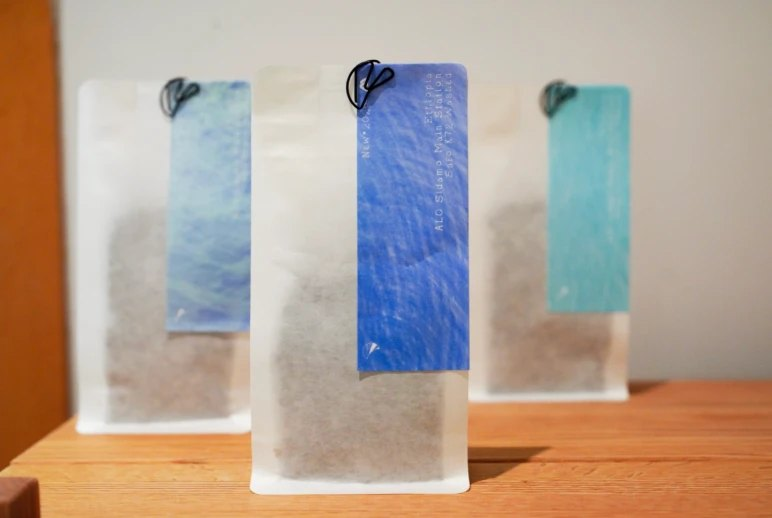

Ethiopia · Zero-fermentation washed
Ethiopia ALO Sidamo
Bensa Main Station
74158 Zero Fermentation Washed
$16 · 100g
Add to wishlistOnline shop opening soon. Reserve by email from your wishlist.
Basic info
- Region
- Sidamo, Bensa
- Variety
- 74158
- Process
- Zero-fermentation washed
- Harvest
- 2026
- Roast
- Light
- Tasting
- Orange juice · Buddha’s hand · nectarine · jasmine green tea
A 74158 from ALO’s main station in Bensa, Sidamo, washed with no fermentation: mandarin and lemongrass, then orange juice and nectarine, and a long jasmine green tea finish.
In the cup
- Aroma
- Citrus and mandarin orange, with a light lemongrass.
- Palate
- Sweet-tart juiciness like orange juice, Buddha’s hand and nectarine. Clean and delicate.
- Finish
- A light jasmine green tea, fine and long.
On the label
Ethiopia ALO Sidamo Bensa Main Station 74158 Zero Fermentation Washed

About the estate
Every ALO lot we cupped this year was strong. The main station’s mixed washed is the most intense: kumquat wrapped in heavy florals, a complex, shifting juiciness and a long finish. The K72 washed is all rich, smooth yellow fruit. This one, the zero-fermentation washed, is the most delicate: an elegant white-flower aroma, sweetness and acidity like freshly squeezed sweet orange, and the juiciness of white peach.
ALO Coffee is an Ethiopian green-coffee company founded in 2020. In its second year, founder Tamiru Tadesse Tesema led the team to first place in Ethiopia’s Cup of Excellence.
Farmers in the village of Alo had grown coffee for a long time, on land above 2,400 metres. After years of tending, the trees bore very small cherries, and because local traders didn’t want small beans, the farmers never found a buyer. In 2020 Tamiru Tadesse came to Alo, tasted those small beans and saw how much they had to give in flavour and quality.
Within a few years ALO became the name for top-grade Ethiopian coffee, ahead of the rest in both quality and volume.
Brew this coffee
Cone dripper
A V60 or any cone, one cup
- Grind
- EK43 #9.2 · C40 16 clicks
- Ratio
- 1:16
- Dose
- 16 g
- Water
- 256 g at 95 °C
- Time
- 2:10
- Pour 30 g and let it bloom for 40 seconds.
- With a thin stream, circle out from the centre to 135 g. Wait 20 seconds.
- With a heavier stream, raise the water level and pour to 256 g.
- Let it drain through, then take the dripper off.
Flat-bottom dripper
A Kalita Wave or any flat bed, one cup
- Grind
- EK43 #10 · C40 20 clicks
- Ratio
- 1:15
- Dose
- 16 g
- Water
- 240 g at 94 °C
- Time
- 3:00
- Pour 45 g and let it bloom for 30 seconds.
- With a thin stream, circle to 115 g. Wait 30 seconds.
- With a thin stream, circle to 180 g. Wait 30 seconds.
- With a thin stream, circle to 240 g. Let it drain through, then take the dripper off.
Water: soft mineral water, TDS around 40–50. We brew with Nongfu Spring. All brew guides
You may also like
All coffee- Bambito Estate · Panama · Anaerobic natural · $18 · 100g
- Finca La Fresa · Honduras · Washed · $26 · 100g
- Elida Estate · Panama · Dark-room dried natural · $39 · 75g
- Gato Grande · Panama · Cold-fermented yeast natural · $49 · 75g